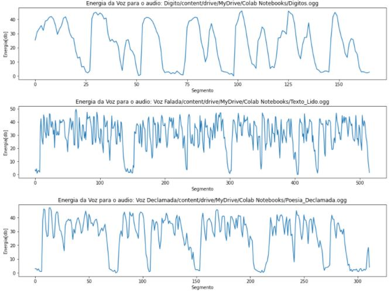
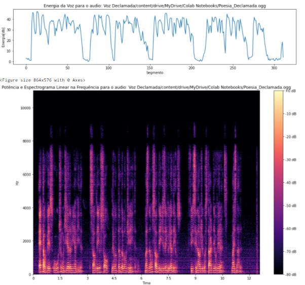
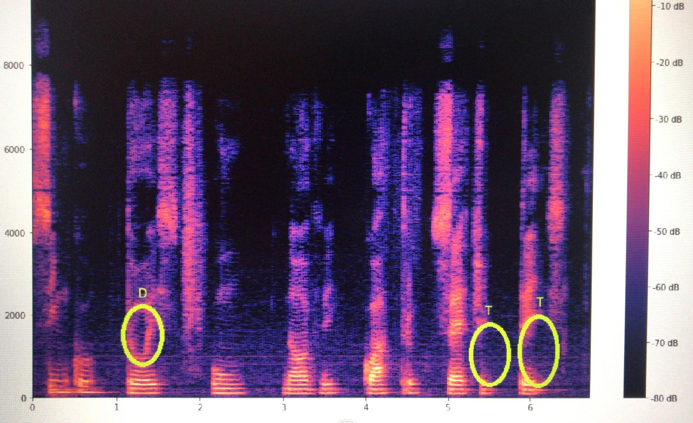

Segue o link do Collab utilizado para colocar os códigos em python e mostrar o resultado dos experimentos:
Acessar Collab.
Objetivos
1. Gravar Arquivos de Áudio com dígitos, números gerais, texto lido e poesia
2. Leitura de Arquivos de Áudio e janelamento
3. Cálculo das Energias de Tempo Curto
4. Cálculo dos Espectrogramas
5. Determinação do Pitch, da Frequência Fundamental e das Formantes ( f1 a f4 ) de Algumas Vogais
6. Determinação de fonemas surdos, sonoros, consoantes gerais e plosivos
Para a primeira parte do experimento, foram gravados áudios que serão analisados no deccorer do relatório.
Dígitos
Números Gerais
Texto Lido
Poesia Declamada
Para a parte 2. do experimento foi lido o arquivo de som com a poesia declamada. Abaixo, segue o plot da potência do som pelo tempo:
Fig.1 - Plot da Onda.
Em seguida, foram definidos alguns parâmetros de análise. São eles:
Frequência de Amostragem 22050
Tamanho do Segmento 882
Número de Segmentos no Arquivo 313 . Pontos Soprepostos 441
E, com isso, também foi possível plotar a janela de Hamming, que está exibida abaixo: Fig.2 - Janela de Hamming.
Essa parte do experimento está no collab abaixo: Acessar Collab partes 3 e 4.
Os gráficos da energia de contorno para cada áudio nos ajudam a identificar
onde o som é surdo, sonoro e silêncio.
Os fonemas surdos são: /p/, /t/, /k/ e os sonoros: /a/, /e/, /i/, /o/, /u/, /b/, /d/, /v/, /z/
Nos gráfico de espectro de frequência é possível enxergar as frequências formantes, onde
no gráfico quanto mais amarelo mais energético são os sinai, assim existe correspondência
entre o gráfico da energia de contorno e o espectrograma.
Abaixo, seguem duas imagens que demonstram os resultados obtidos:

Fig.3 - Energia do sinal.

Fig.4 - Exemplo de Espectrograma.
Fizemos uma analise semelhante aos exemplos em nossos aúdios, isolando vogais, e analisando sua autocorrelação e espectro de frequência para descobrir suas características auditivas, como frequência fundamental e período.
Obtivemos os seguintes resultados:
Vogal "u": Período 8.8ms, fundamental 113.6Hz
Vogal "O": Período 8.1ms, Fundamental 123.5Hz
Vogal "E": Período 1.9ms, Fundamental 523.6Hz
Observando seu espectro de frequência, pudemos observar a repetição da frequência fundamental através das formantes:
Formantes de "U": 110Hz, 220Hz, 340Hz, 460Hz
Formantes de "O": 120Hz, 240Hz, 380Hz, 805Hz
Formantes de "E": 120Hz, 260Hz, 400Hz, 500Hz
É possível observar a repetição das fundamentais, porém com alguns desvios e até mesmo picos em frequencias anteriores, devido a possíveis ruídos, problemas na pronuncia entre outras coisas que tornam o teste imperfeito.
Acusticamente, as consoantes oclosivas/plosivas podem ser observadas a partir de um período de silêncio que evidencia o tempo de oclusão
do trato vocal e por uma explosão que marca a abertura do trato vocal e a saída de ar da boca.
No espectograma do áudio Dígitos, observamos que no momento dessas consoantes há uma queda nas frequências entre, aproximadamente, 500-2000Hkz.

Fig.5 - Plosivos.
Fonte:
Slide de referência.
Slide 12